営業時間 8:00〜17:00
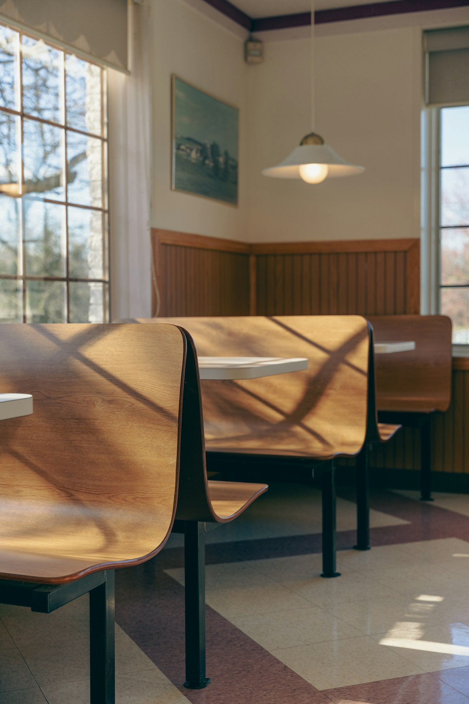
Cafe HINOKI
木の香りと、
珈琲の余韻。
珈琲の
店内のカウンターとテーブルには、奈良・吉野のひのきを使いました。扉をあけると、ふわりと木の香り。窓から入るやわらかな光のなかで、一杯ずつハンドドリップで淹れた珈琲をお出しします。
朝の一杯に立ち寄るのも、本を片手にひとりで長居するのも。その日の気分で、思い思いに過ごしていただけたらうれしいです。
Cafe HINOKI 店主
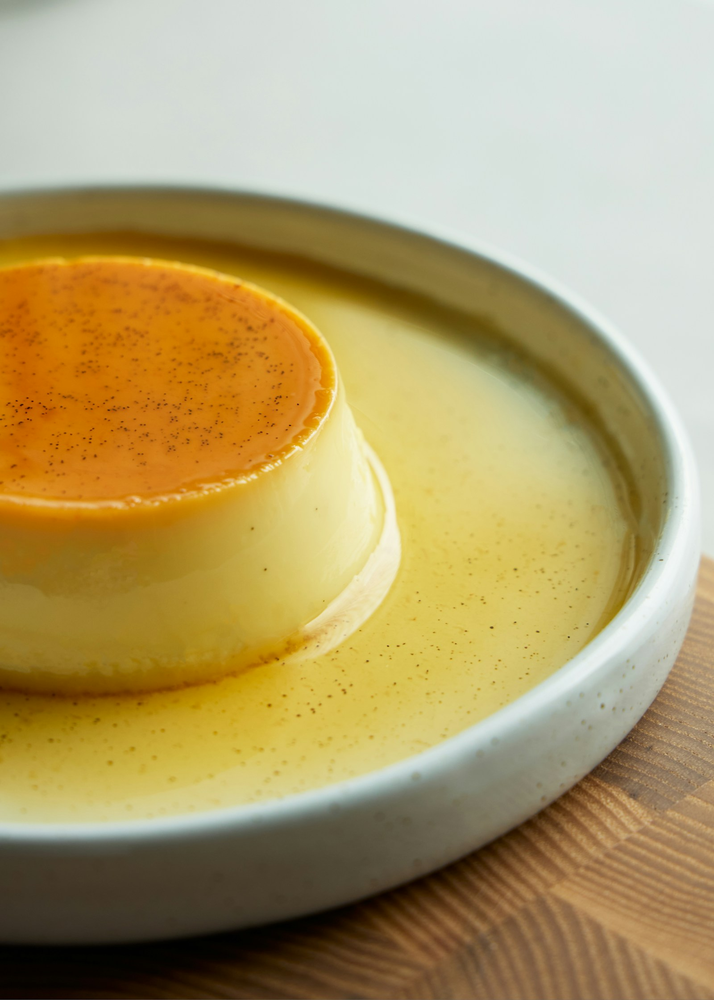
いちばん人気の、
かためのプリン
かための
卵と牛乳ときび砂糖だけで、毎朝お店で焼いています。スプーンを入れると、しっかりとした手ごたえ。ほろ苦いカラメルと一緒にどうぞ。
かためのプリン450円
ドリンクとセットで50円引き／
一日の、三つの時間
朝・昼・午後で、

8:00 – 11:00
モーニング
ただいまの時間
厚切りのトーストに、自家製のジャムとバター。ドリンクを頼むと、トーストとゆで卵がつきます。
トーストセットドリンク代＋150円

11:30 – 14:00
ランチ
ただいまの時間
奈良の農家さんから届く野菜を中心にした、日替わりのプレート。スープとドリンクつきです。
ひのきプレート1,300円

14:00 – 17:00
カフェタイム
ただいまの時間
毎朝焼いているパウンドケーキやプリンを、珈琲と一緒に。ケーキセットは50円引きになります。
ケーキセット1,000円〜

一杯ずつ、
ハンドドリップで。
豆は、奈良の小さな焙煎所に、お店のためだけに焼いてもらっています。ご注文を受けてから挽き、お湯の温度と時間をはかりながら、ゆっくりと落とします。
深煎りのブレンド、浅煎りのシングルオリジン、カフェインレスの3種類からお選びいただけます。
店内のこと
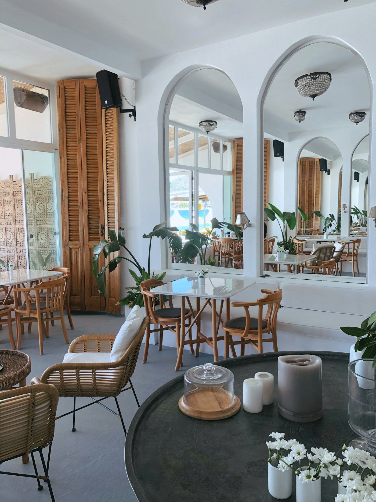
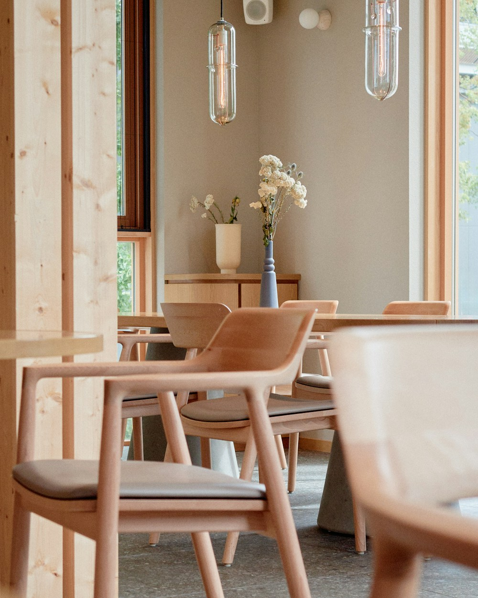
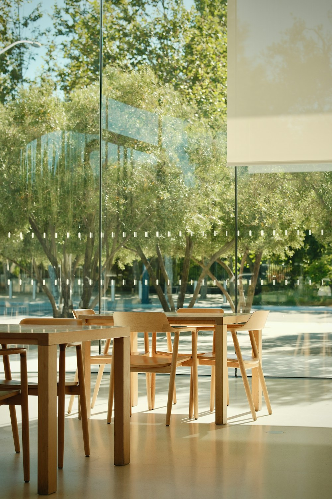
席数：
#cafehinoki
光の入る窓辺や、
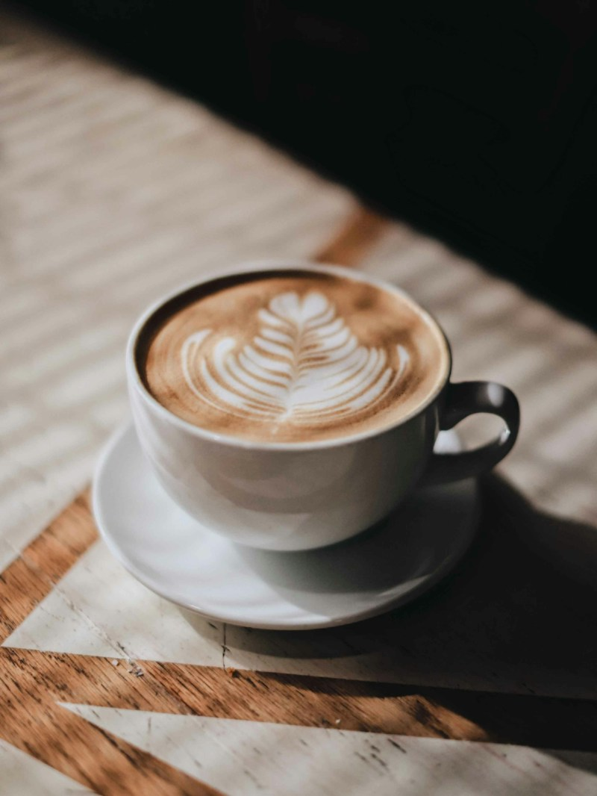
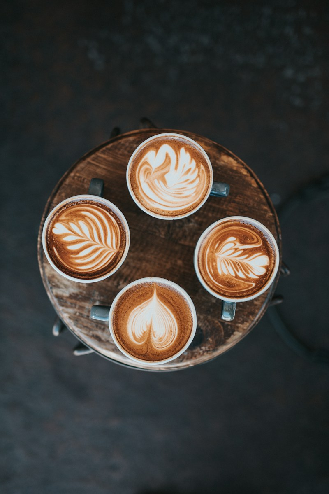
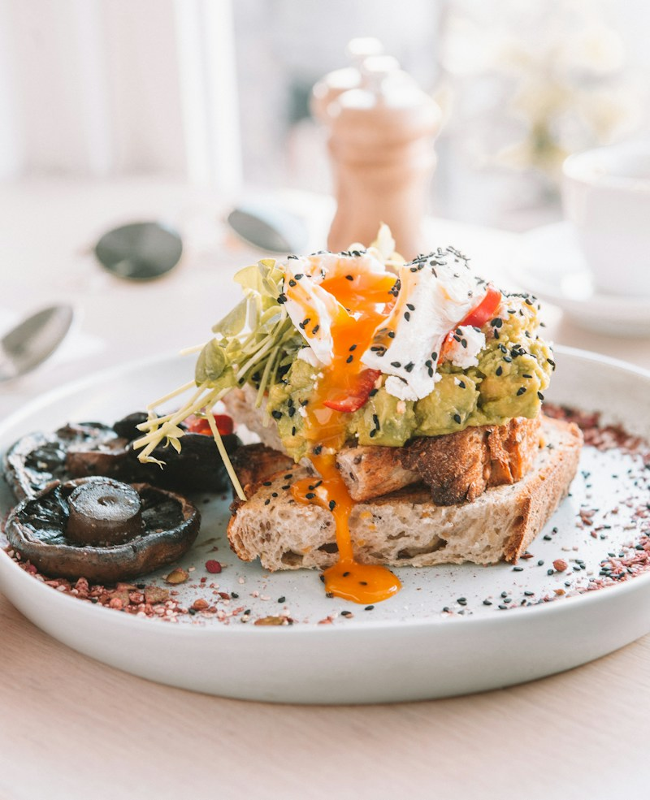
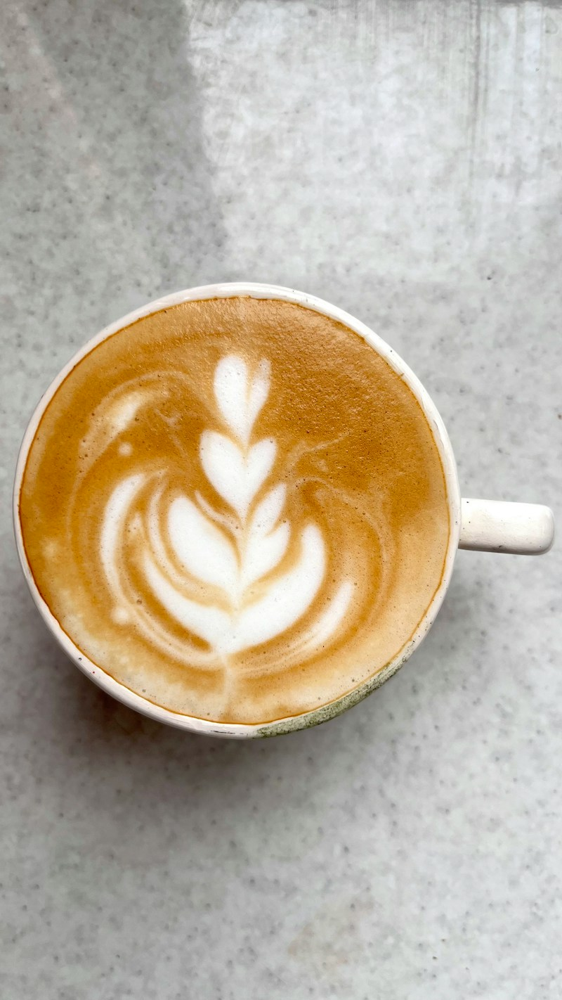
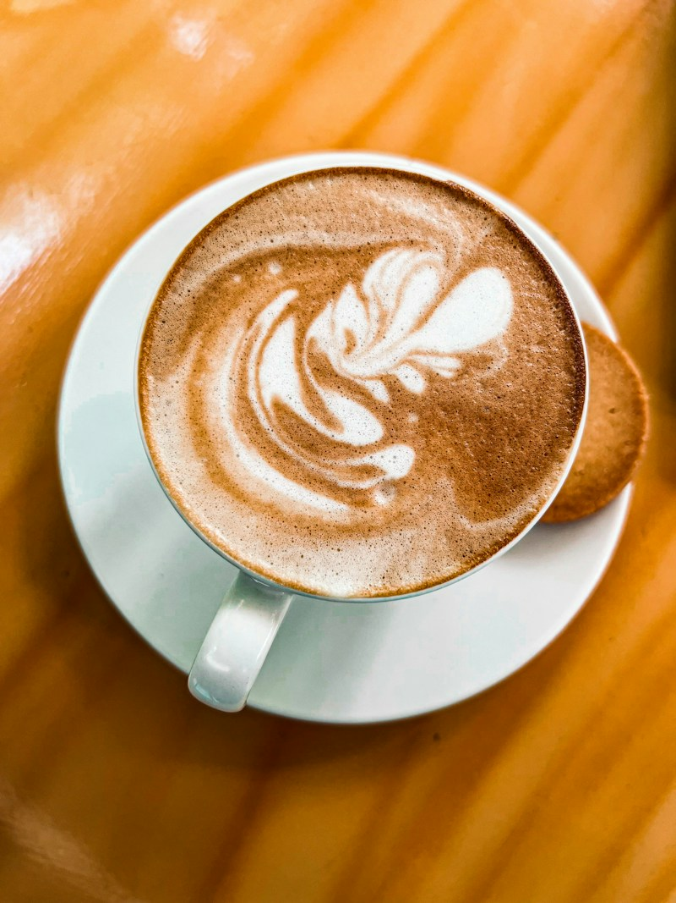
※投稿のイメージです（ポートフォリオ用の素材写真）。
アクセス・営業時間
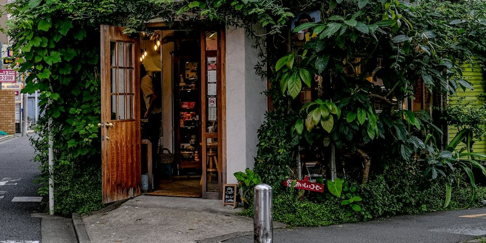
- 住所
- 奈良県奈良市ひのき町1-2-3（架空）
- 電話
- 0742-00-0000（架空）
- 営業時間
- 8:00〜17:00（L.O. 16:30）
- 定休日
- 水曜日（年末年始は休業）
- アクセス
- 近鉄奈良駅から徒歩10分／駐車場3台
- ご予約
- ランチのみお電話で承ります
お知らせ
- 秋の焼き菓子「栗とほうじ茶のパウンドケーキ」を始めました。
- 年末年始は12月31日〜1月3日までお休みします。
- モーニングの時間を8:00〜11:00に変更しました。